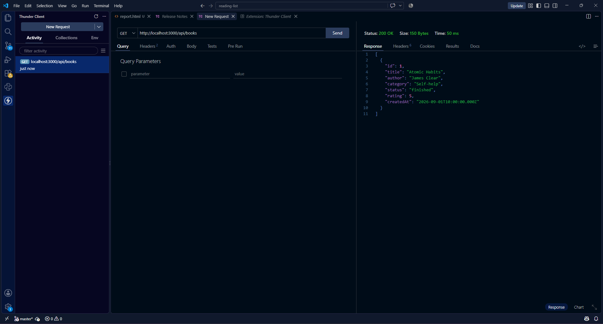
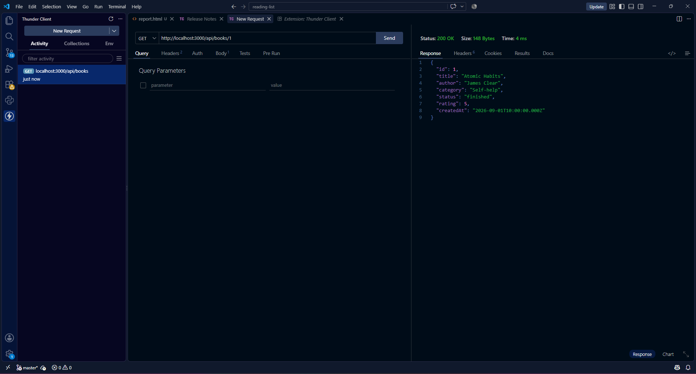
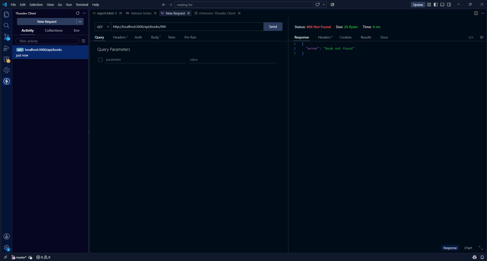
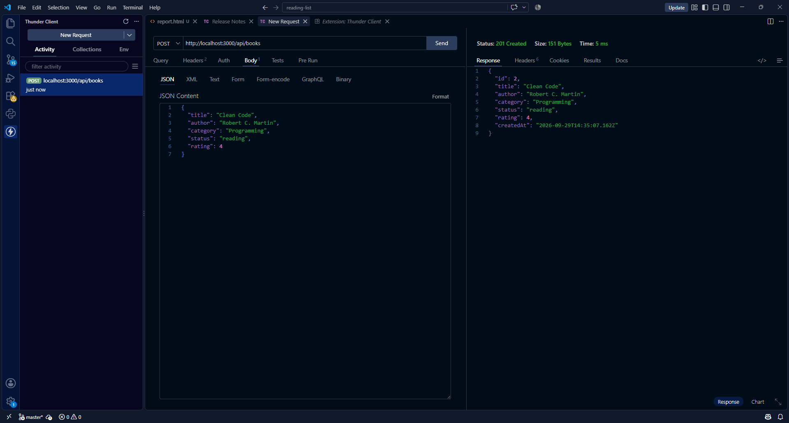
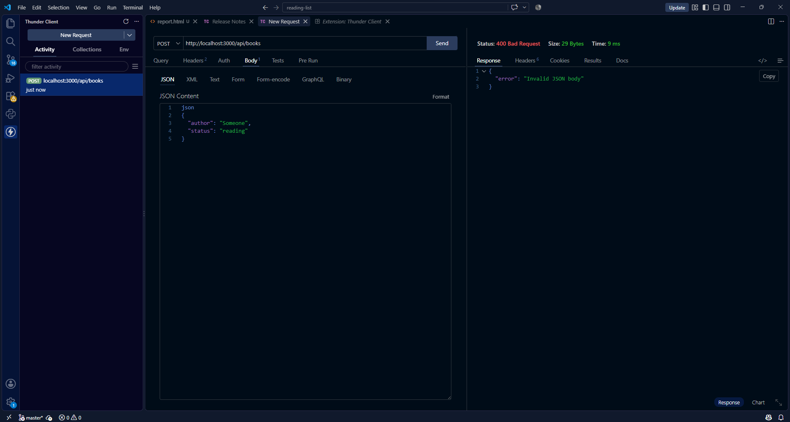
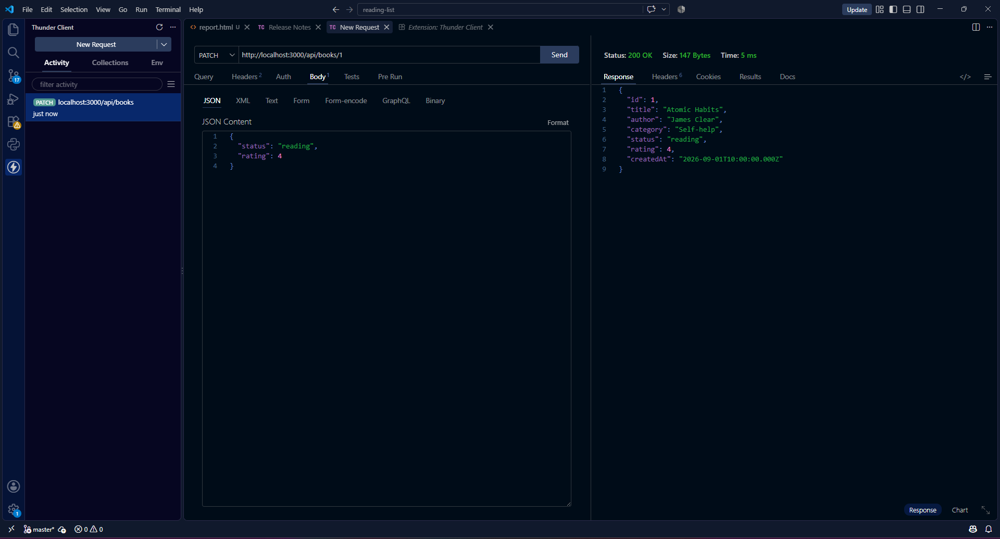
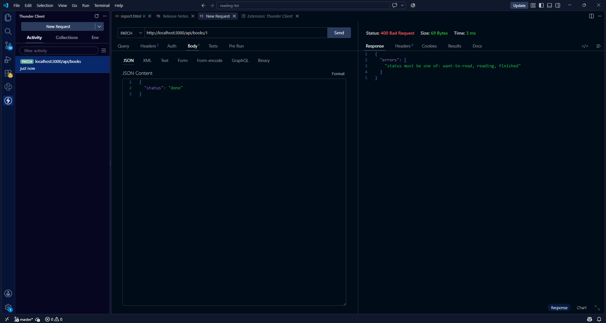
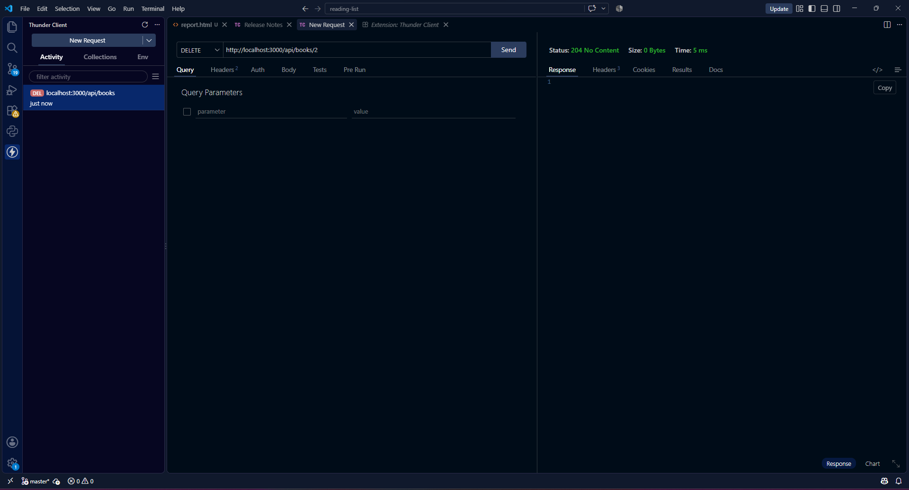
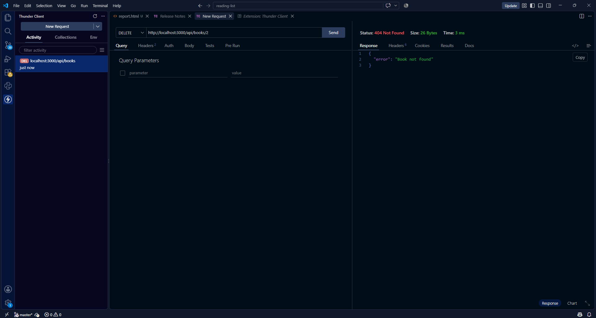
หน้าเว็บเรียกใช้ API ผ่าน fetch ทั้งหมด และสร้างการ์ดหนังสือด้วย textContent เพื่อป้องกันการแทรก HTML (XSS)
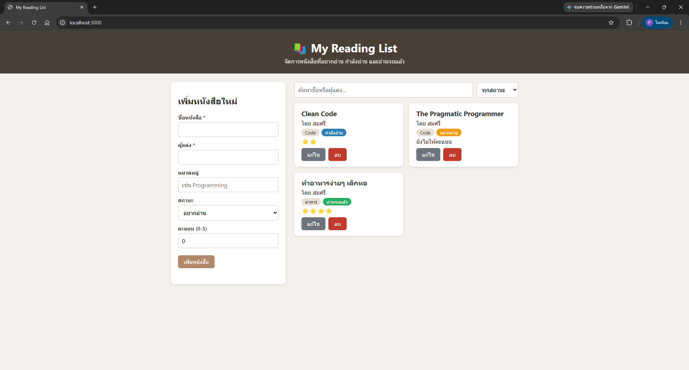
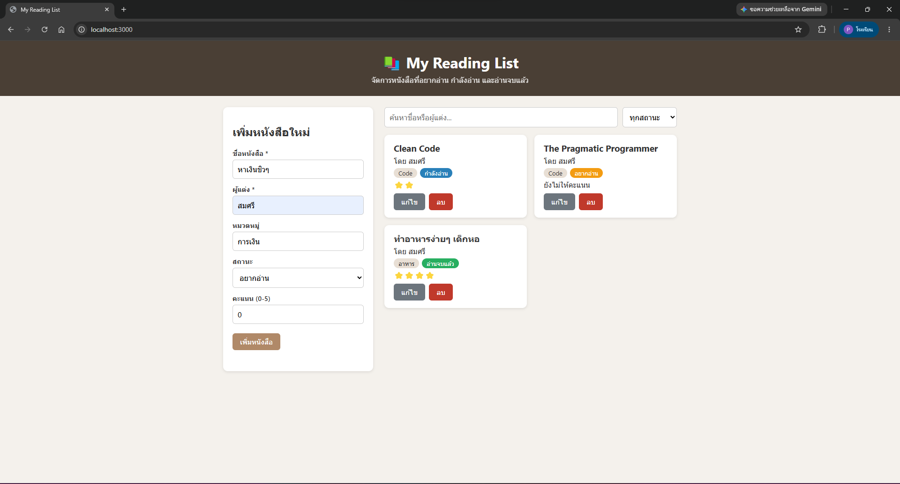
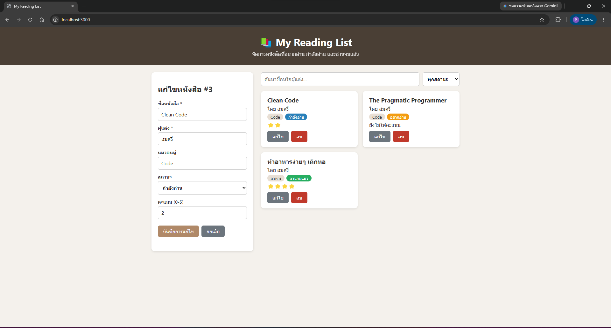
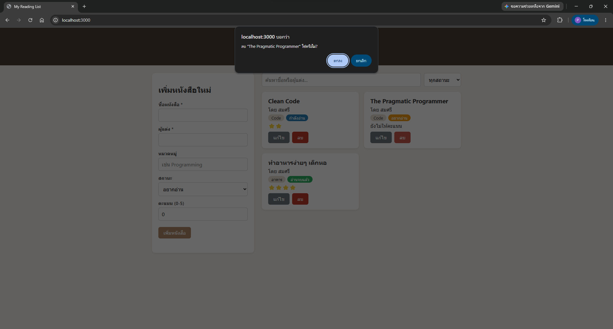
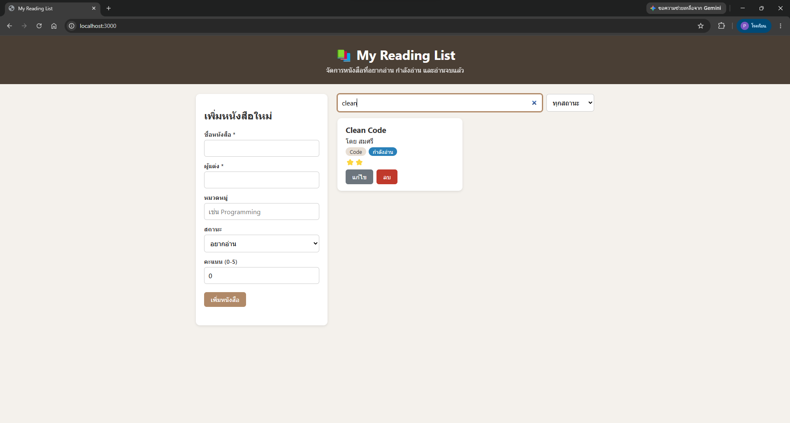
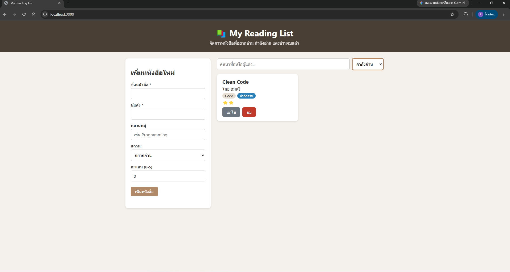
| อาการ | รัน npm run dev แล้วขึ้น Invalid package.json ... line 10 column 3 เซิร์ฟเวอร์ไม่เริ่มทำงาน |
|---|---|
| การตรวจสอบ | อ่านข้อความ error ที่ระบุบรรทัดและคอลัมน์ แล้วเปิด package.json ดูส่วน scripts |
| สาเหตุ | ตอนแก้ scripts มีเครื่องหมายปีกกาปิด }, ซ้ำเกินมา 1 ชุด ทำให้ JSON ผิดไวยากรณ์ |
| วิธีแก้ | ลบปีกกาที่เกินออก ให้เหลือ }, เพียงชุดเดียว แล้วบันทึกและรันใหม่ |
| ผลลัพธ์ | เซิร์ฟเวอร์ขึ้น Server running at http://localhost:3000 |
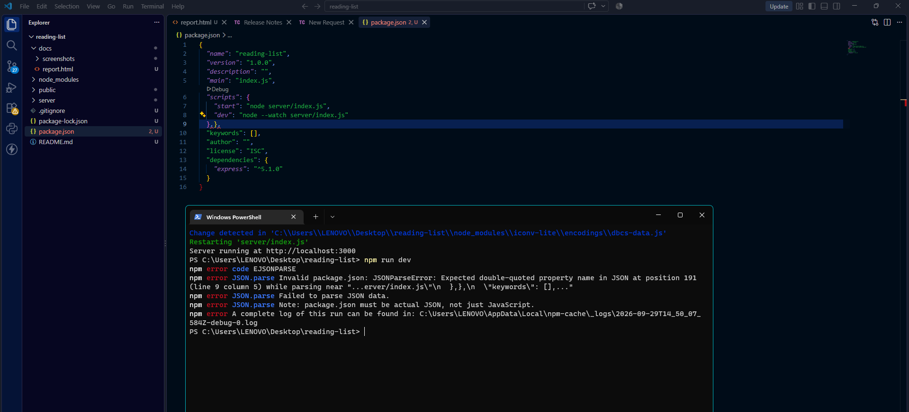
| อาการ | กดปุ่มเพิ่ม/แก้ไขหนังสือ หรือโหลดหน้าเว็บแล้วข้อมูลไม่แสดงผล หรือส่งคำขอไปยัง API ไม่สำเร็จ (ขึ้น TypeError ใน Console) |
|---|---|
| การตรวจสอบ | เปิด DevTools (F12) ดูที่แท็บ Console พบข้อความสีแดง Uncaught (in promise) TypeError: Failed to fetch และตรวจสอบแท็บ Network พบสถานะคำขอขึ้น Failed |
| สาเหตุ | ระบุ URL ของ API หรือ Port ไม่ถูกต้อง (เช่น ลืมระบุ port 3000 หรือพิมพ์พาธ API ผิด) หรือฝั่ง Server ยังไม่ได้เริ่มทำงาน ทำให้ Browser ไม่สามารถเชื่อมต่อ API ได้ |
| วิธีแก้ | ตรวจสอบและแก้ไข URL ในฟังก์ชัน fetch() ให้ถูกต้องเป็น http://localhost:3000/api/books และตรวจสอบให้แน่ใจว่าได้เปิดรันเซิร์ฟเวอร์เรียบร้อยแล้ว |
| ผลลัพธ์ | หน้าเว็บสามารถเชื่อมต่อ API ดึงข้อมูลมาแสดงผล และส่งคำขอผ่านฟอร์มได้สำเร็จโดยไม่เกิด error ใน Console |
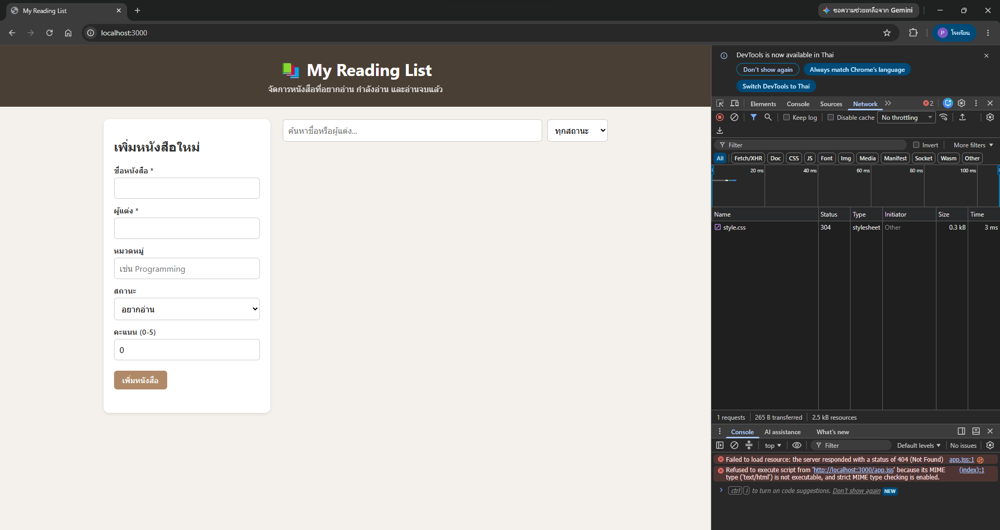
โครงงานนี้ได้ออกแบบและพัฒนา REST API สำหรับจัดการรายการหนังสือ ครบทั้ง 5 endpoint ใช้ HTTP Method และ Status Code ตรงตามความหมาย มีการตรวจสอบข้อมูลที่ฝั่งเซิร์ฟเวอร์ และมีหน้าเว็บเรียกใช้งานได้จริง การทดสอบ 10 กรณีแสดงว่า API ตอบสนองถูกต้องทั้งกรณีปกติและกรณีผิดพลาด
ข้อจำกัดและแนวทางพัฒนาต่อ: ปัจจุบันเก็บข้อมูลในไฟล์ JSON ซึ่งเหมาะกับผู้ใช้คนเดียว หากต้องรองรับผู้ใช้หลายคนควรเปลี่ยนไปใช้ฐานข้อมูล เช่น SQLite หรือ MongoDB เพิ่มระบบล็อกอิน และเพิ่มการแบ่งหน้า (pagination) เมื่อมีหนังสือจำนวนมาก